The short version
Helping first-time investors trust mutual funds, inside a stock-trading app.
- Problem Most people who could invest in mutual funds don’t, because they don’t understand or trust them.
- Brief A metrics-driven way to invest in and track mutual funds inside the client’s stock-broking app.
- Challenge One module for two investors: first-timers who need risk explained honestly, and traders who need it to feel quick.
- Outcome Stopped before development, when the client paused all outside work.
My part I led a two-person team through the client workshop, benchmarking, job stories, prioritisation, IA, wireflows and wireframes.
What made it hard
- Fear came before everything else. A first-time investor said it plainly: “I fear if I make wrong investment decision I might lose my money.” Good screens don’t help if people never get as far as opening them.
- Two audiences, one app. Savvy investors compare holdings, returns, risk and fund managers before deciding, and switch between charts and numbers. They want depth, fast.
- Honesty had to be designed. The app had to show risk and past performance openly, including bad years, to investors who already feared losing money.
- Control mattered as much as starting. One job story asked for a “kill switch” to stop a systematic investment without hunting down each one.
How my thinking changed along the way
Let people look before they commit
The first-timer we heard from wanted to start but was afraid of choosing wrong. So we gave new investors guest login without Aadhaar, PAN or bank details, an onboarding tour that explains strategy, budget and how the app works, and a “SIP with ₹100” entry point among the top picks. Letting them look around first lowers the cost of curiosity. The trade-off is that guests still have to complete KYC before their first investment, so the hurdle moved rather than disappeared.
Two views of the same fund
Savvy investors need the full breakdown, and nervous ones need plain terms. We kept the simple view up front and put the full breakdown one tap away on the fund detail page.
One place to stop a SIP
The kill switch story shaped this one. SIPs can be paused or stopped from one place, which gives investors some control back once they’ve started.
Basics before the clever features
We had six hygiene features (guest login, onboarding tour, fund breakdowns, payment and SIP tracking, personalised alerts, chart or number views) and four unique ones (sharing with family and friends, linked news, voice help, reviews from real investors). Value-effort mapping put the hygiene set in the first release. Trust comes from the basics working well, and novel features don’t help if tracking a SIP is confusing. The cost was that the features that would set the app apart from Groww and Coin came later.
One cart for SIPs and lump sums
The user-intent document said investors wanted to “make a single purchase and save time” and see “a comprehensive understanding of the payment breakdown”. So investors add funds to a cart, set SIP dates and amounts or a one-time amount for each, and see a clear split between SIP and lump-sum payments before paying. It adds one extra step for someone buying a single fund, so we put an “Invest now” button beside “Add to cart”.
What we left out, on purpose
We mapped the five phases of investing and wrote seven job stories, then ranked every feature by value against effort. What made the first release was the set that makes the app trustworthy. The ideas that would make it stand out waited.
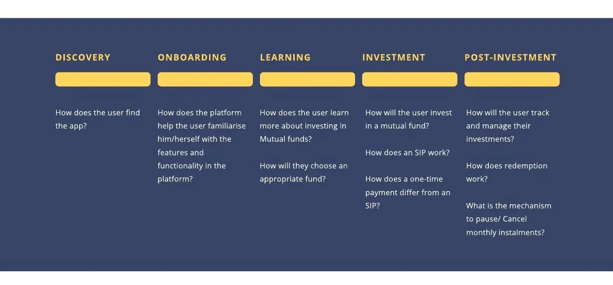
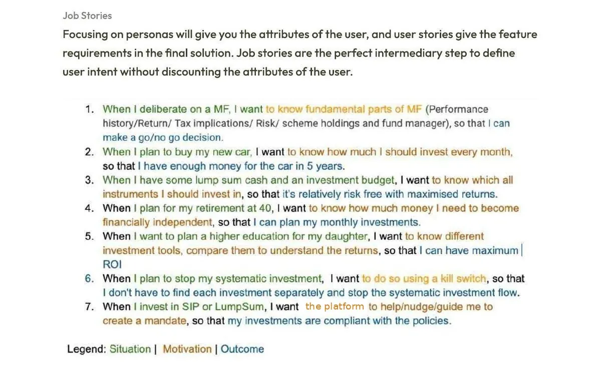
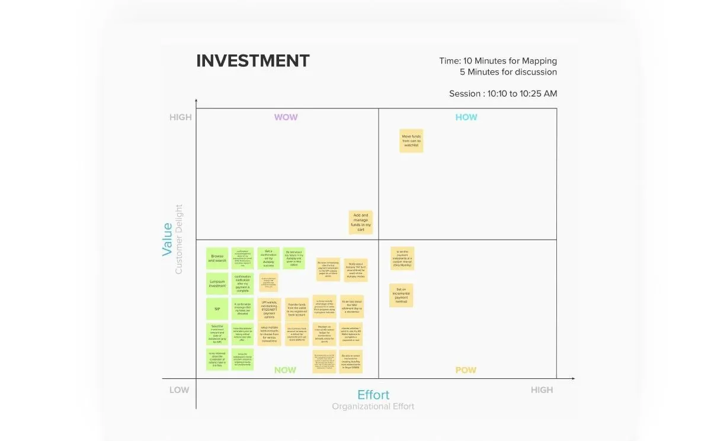
What investors see
These are the core screens for first-timers and experienced investors alike, followed by two rounds of review on the dashboard, autopay mandate and order status.
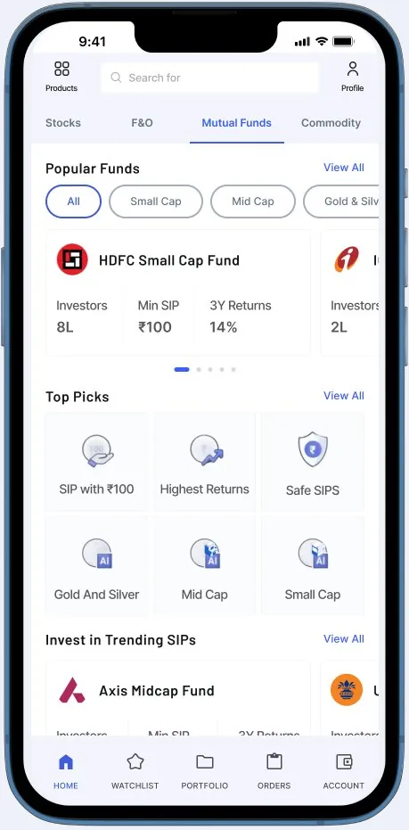
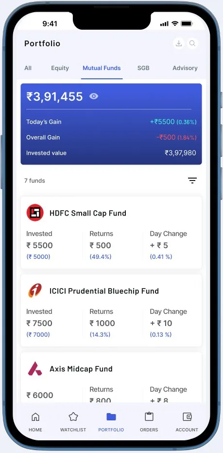
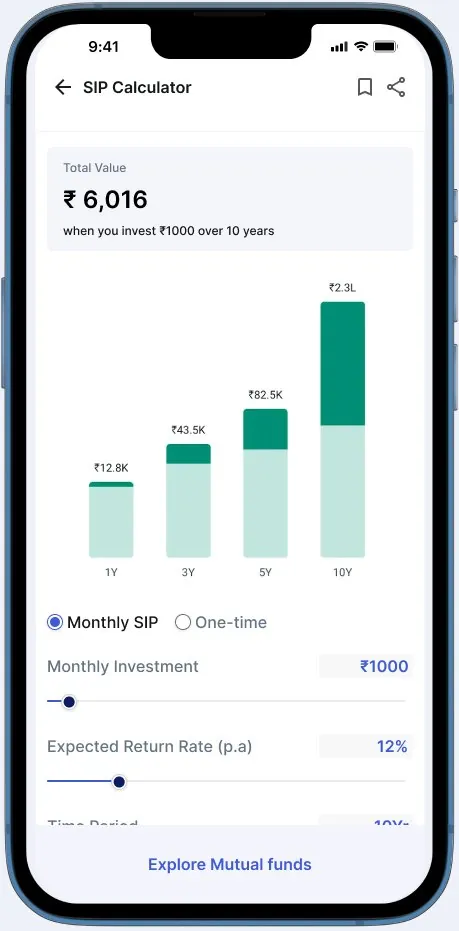
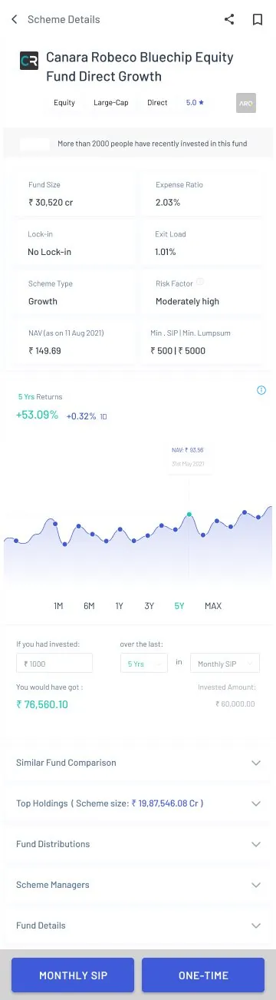
Each screen answers a job story. The fund detail is for the investor deciding go or no-go on a fund. The SIP calculator answers “how much should I invest every month?”. The portfolio is for tracking, and the mandate and order screens make the money side easy to follow.
Two rounds of review
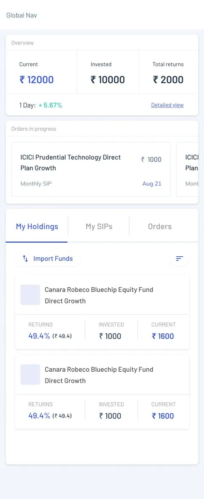
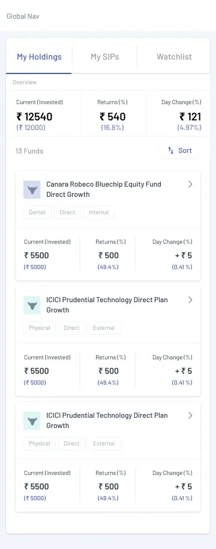
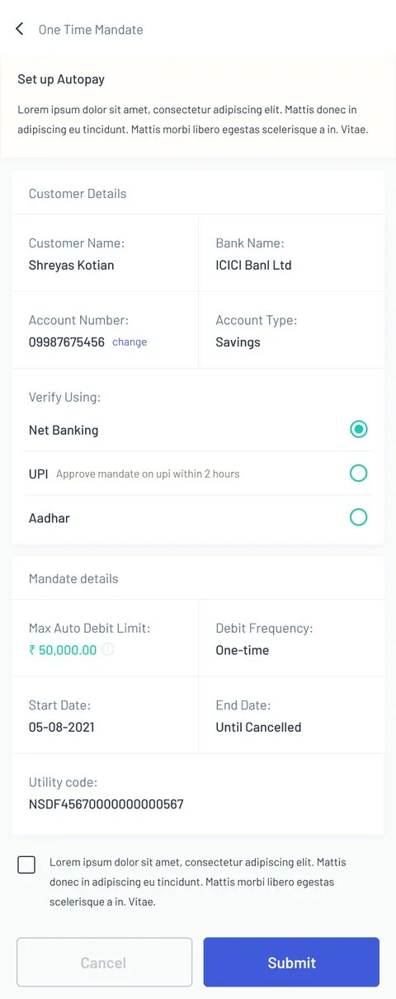
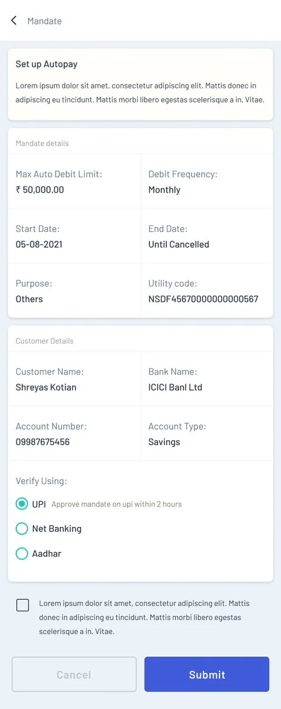
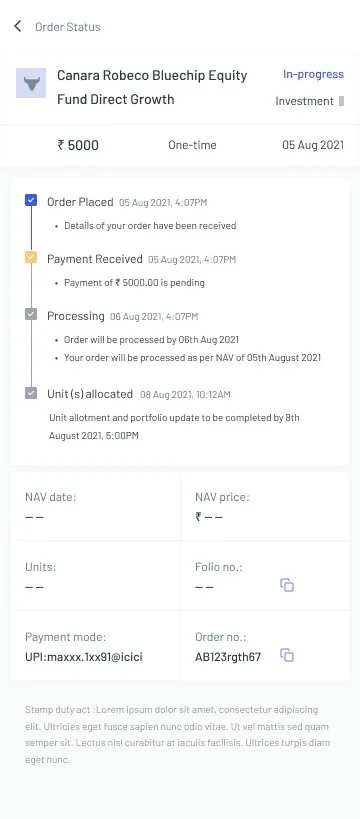
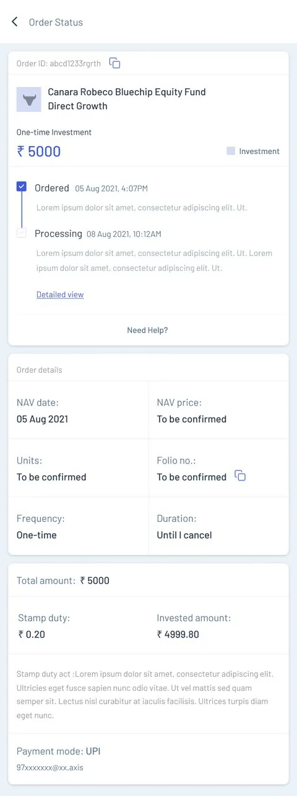
Where it ended up
- It never launched. Leadership changed on the client side, and the new team put all external engagements on hold. The project stopped during design review, before development.
- What we delivered before the pause: workshop outcomes, competitor benchmarks, job stories, a prioritised feature set, and two reviewed rounds of the core screens (dashboard, fund detail, autopay mandate and order status), plus hi-fi mockups.
What didn’t go to plan
The project stopped before anything was built. The client paused all outside work during design review, so none of this went into development, and I have no usage figures to share.
I also leaned on reviews instead of leading. It was one of my first projects as a lead, and I went to the product and project managers for review and feedback at every stage.
Two trade-offs stayed open: guests still had to complete KYC before investing, and the features that would set the app apart were pushed to later releases.
What I’d do next
Set up a clear process from the start: agreed milestones, review points and decision owners, so the team can move faster with fewer check-ins.